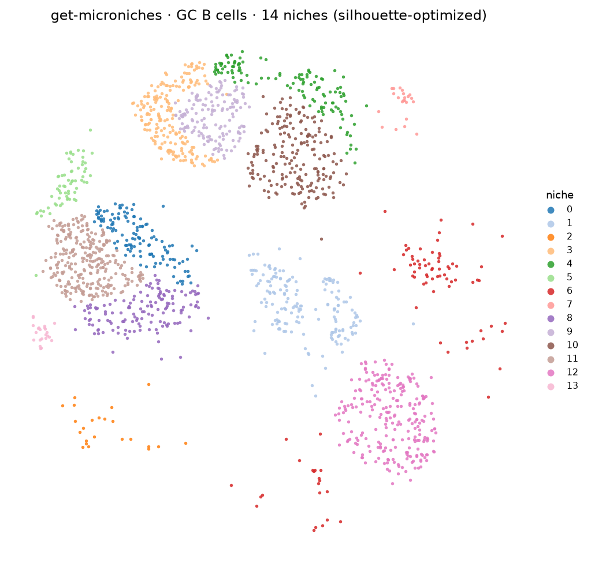
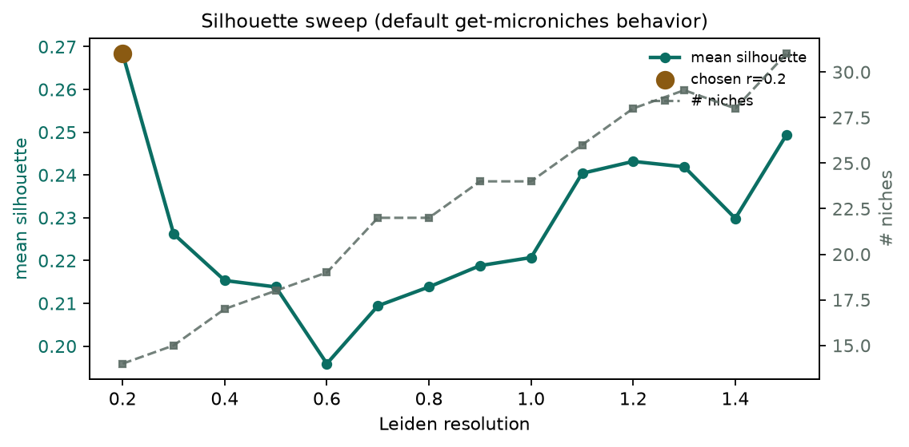

New CLI · get-microniches
From a finished SpaceTravLR run TOML (optional cell-type subset), filter spatial β features, PCA → Leiden, and by default pick the resolution with the best mean silhouette.
Tonsil GC B-cell run used for these figures:
spacetravlr get-microniches \ --run-toml …/spacetravlr_run_repro.toml \ --cell-type B_germinal_center \ --features-csv …/beta_features_kept.csv \ --out ./microniches
14 microniches on germinal-center B cells (159 kept β features → 40 PCs).

Without --resolution, the CLI sweeps resolutions and keeps the max mean silhouette.

| Resolution | Silhouette | # niches |
|---|---|---|
| 0.2 | 0.268 | 14 |
| 0.3 | 0.226 | 15 |
| 0.5 | 0.214 | 18 |
| 0.8 | 0.214 | 22 |
| 1.0 | 0.221 | 24 |
| 1.2 | 0.243 | 28 |
| 1.5 | 0.249 | 31 |
| Niche | Cells | Niche | Cells |
|---|---|---|---|
| 0 | 129 | 7 | 22 |
| 1 | 166 | 8 | 143 |
| 2 | 23 | 9 | 148 |
| 3 | 193 | 10 | 196 |
| 4 | 123 | 11 | 283 |
| 5 | 64 | 12 | 246 |
| 6 | 89 | 13 | 23 |
microniche_labels.csv, kept_beta_features.csv,
resolution_sweep.csv, summary.json, microniche_pca.feather